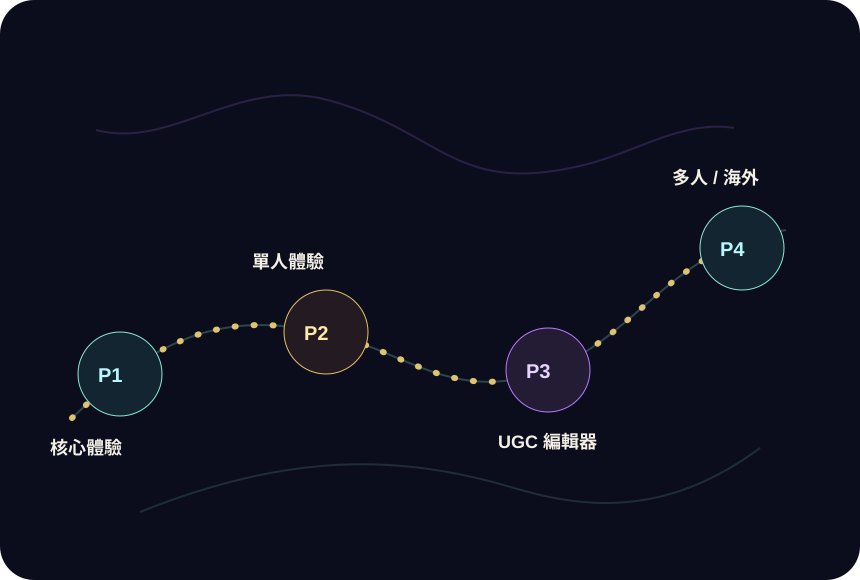

Phase 1 · 2026 Q1
MVP 上線與核心循環驗證
確認雙核引擎、創角、劇本選擇、對話推進與角色狀態能形成完整可玩循環。
藍圖頁用「任務地圖」取代傳統時間軸，讓產品發展更像玩家即將探索的世界，也更符合遊戲網站氣質。

確認雙核引擎、創角、劇本選擇、對話推進與角色狀態能形成完整可玩循環。
加入飢餓、疲勞、生存數值、多重存檔與手機端體驗優化。
讓創作者能製作、測試、上架自己的模組，形成內容供給與平台抽成。
探索多人同步、觀戰、社群劇本與海外展會入口，如 Essen Spiel / Gen Con。